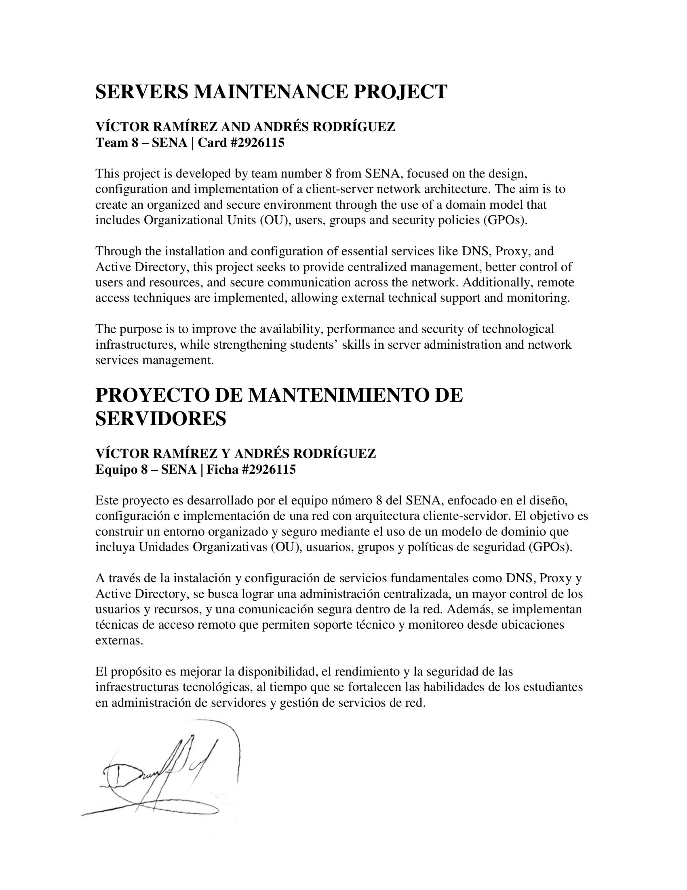
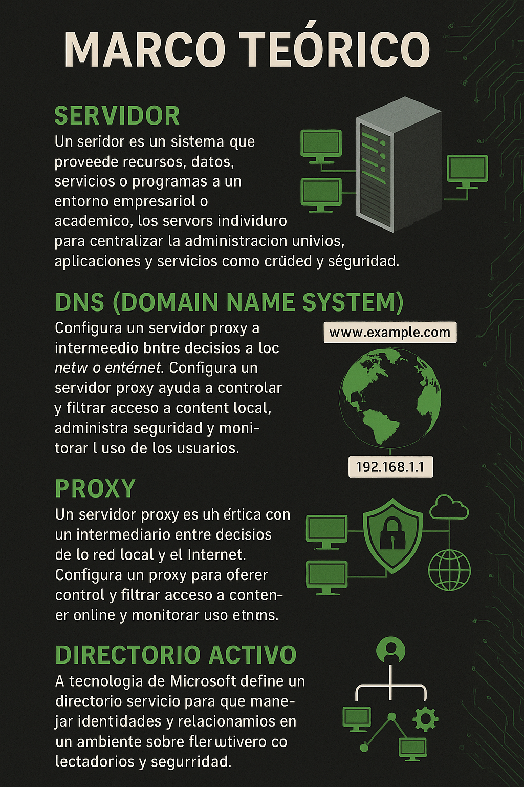

Somos Andrés Rodríguez y Víctor Ramírez, estudiantes del Colegio Montferri. Este proyecto forma parte de nuestro proceso de formación técnica, y lo hemos desarrollado con el objetivo de adquirir experiencia en la instalación y configuración de servidores, así como en la administración de servicios en red.
Nos interesa aprender de forma práctica cómo funciona la infraestructura tecnológica que sostiene los servicios digitales. Por eso, hemos trabajado en este proyecto aplicando conocimientos de redes, servidores DNS, proxys, y Active Directory, entre otros.
Más allá del cumplimiento académico, buscamos que este trabajo nos prepare para enfrentar futuros retos en el campo de la tecnología, especialmente durante nuestras prácticas en el SENA.

En muchas pequeñas y medianas empresas, la red está activa, pero desorganizada: todos los equipos se conectan sin control, no existen usuarios definidos, las contraseñas son débiles o compartidas, y no hay ninguna política de seguridad implementada. Además, no se cuenta con herramientas que permitan bloquear páginas, limitar el uso de internet o monitorear el tráfico.
A esto se suma la ausencia de servicios como DNS configurados correctamente, lo que genera lentitud y errores en las conexiones, o servidores proxy que permitan filtrar el contenido de navegación. En caso de fallos o problemas, tampoco hay un método claro para identificar qué está pasando en la red.
Esta falta de estructura afecta la seguridad, la eficiencia y el control de la red. Por eso, nuestro proyecto propone una solución técnica basada en un servidor centralizado que integre servicios como Active Directory, DNS y Proxy, permitiendo así una red más ordenada, controlada y segura.
El proyecto tiene como alcance principal la instalación y configuración de un entorno cliente-servidor funcional dentro del Colegio Montferri. Se busca implementar servicios clave como DNS, Proxy y Active Directory para demostrar cómo estos pueden mejorar la administración, seguridad y organización de una red local.
El enfoque está orientado a entornos educativos o de pequeña escala, con el fin de facilitar el aprendizaje práctico sobre redes y servicios. La solución presentada servirá como modelo básico que puede ser replicado o adaptado a necesidades similares dentro del colegio, sin comprometer equipos reales en producción.
La implementación del proyecto se realizó en el Colegio Montferri, aprovechando los espacios designados para las prácticas técnicas. Esta institución brinda el ambiente adecuado para realizar simulaciones, pruebas y configuraciones, tanto en sistemas operativos como en servicios de red.
La ejecución se desarrollara de forma controlada, utilizando equipos disponibles en el aula o máquinas virtuales, sin afectar el funcionamiento de la red institucional.
A continuación, se presenta la infografía del marco teórico donde se explican conceptos clave como servidor, DNS, Proxy y Directorio Activo, que fundamentan el desarrollo técnico de este proyecto.

En esta primera fase del proyecto se logró recopilar, organizar y comprender los conceptos fundamentales relacionados con la implementación de servidores, así como los servicios más relevantes dentro de una red estructurada, como DNS, Proxy y Active Directory.
El análisis permitió identificar problemas comunes que enfrentan redes sin una configuración centralizada, especialmente en pequeñas organizaciones o entornos educativos. También se establecieron los objetivos técnicos del proyecto y se definió una solución basada en un servidor centralizado que permita controlar usuarios, accesos y recursos.
Además, se estructuraron las competencias y resultados de aprendizaje, y se planificó el alcance del proyecto de manera realista, considerando los recursos disponibles dentro del Colegio Montferri. Esta base servirá como guía para las siguientes fases de ejecución técnica.